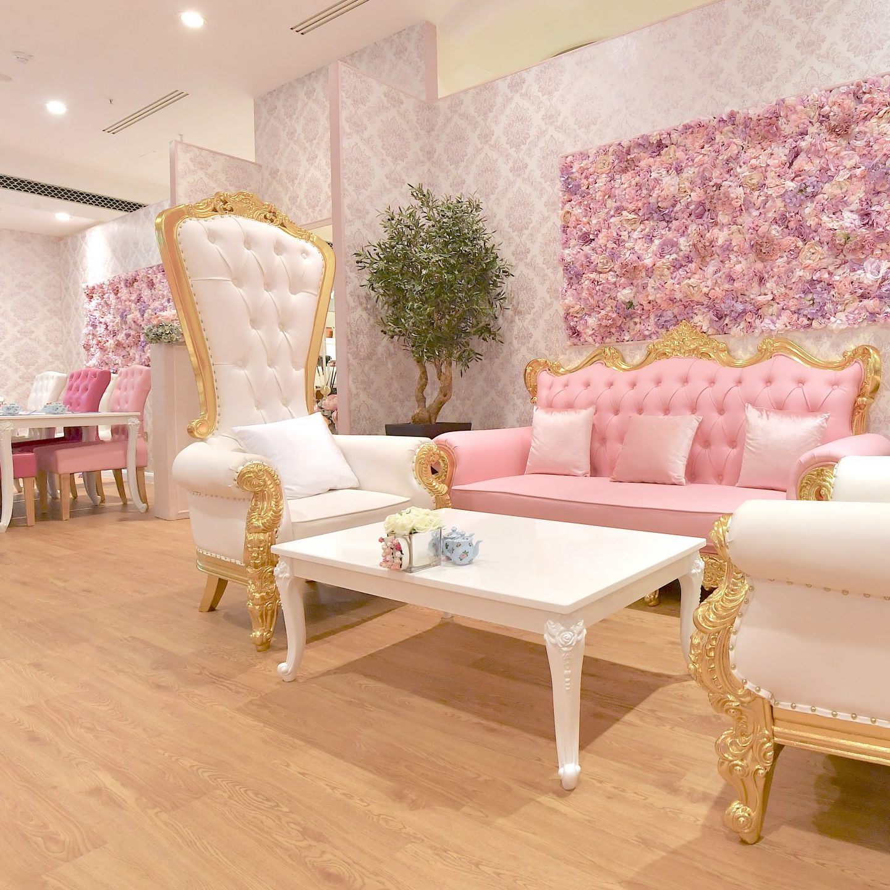

ABOUT WOKING
Located in the heart of Surrey, Woking is a large town offering visitors
a wide range of things to do and well as excellent shopping and dining
facilities. Woking marked Her Majesty the Queen's 60-year reign by
designing a brand new public space in the heart of the town called
'Jubilee Square'. Visitors can now enjoy high quality restaurants and
outdoor seating plus enhanced retail outlets in this area and the
refurbished shopping centres . The diverse and family-friendly calendar
of Woking events includes Chinese New Year celebrations in February,
Woking Youth Drama Festival in March, the ever-popular Party in the Park
in July and award winning Woking Food Festival. For the more active
visitor, Woking's Cycle Trails make it easier than ever to get to,
across and around the Borough on two wheels. Alternatively, take a
leisurely stroll around the many picturesque common and heath lands, or
along the Basingstoke Canal towpath.

Gail's Bakery
They bake fresh, handmade bread, pastries and cakes every day, served
with their carefully-sourced house blend specialty coffee. They take
great pleasure in using the best ingredients we can find for food and
drink, using seasonal ingredients from trusted suppliers.
Island House
Island House is a home from home where the magic happens. Influenced
by global cuisine and inspired by local producers, their menus are a
journey through treasured memories, fresh ingredients and homegrown
concoctions that come together to form a heavenly safari.

Tea Terrace
A modern interpretation of a traditional English tea room. The decor
is quasi-modern with traditional Victorian touches such as the
over-sized throne chairs and ornate sofas which is probably the reason
that the customers feel that the place has an Alice in Wonderland
feel.